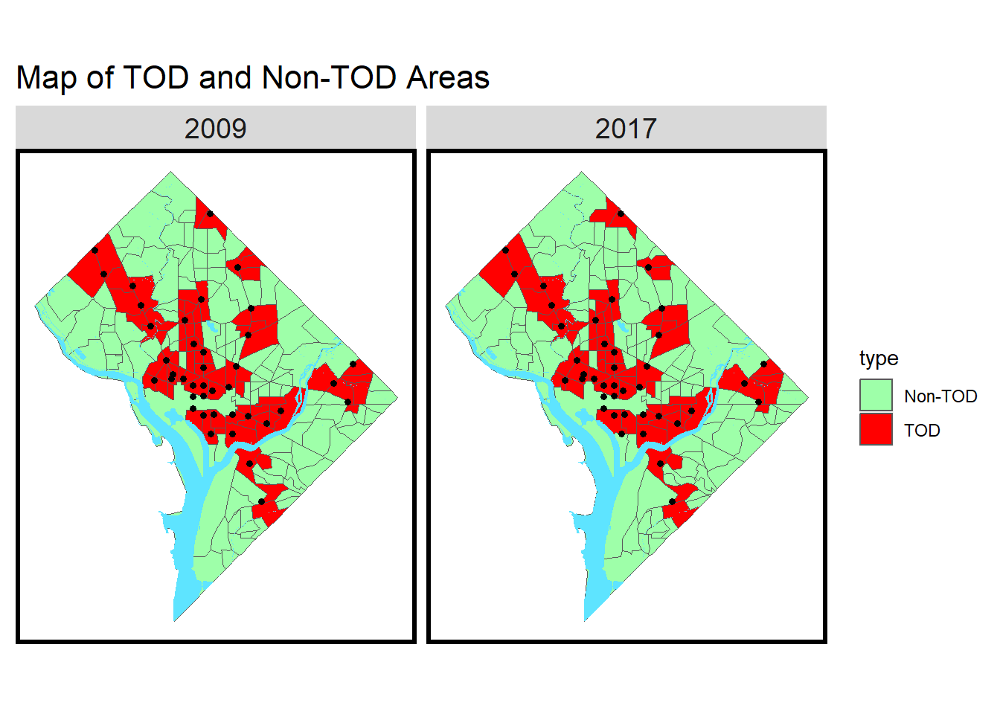
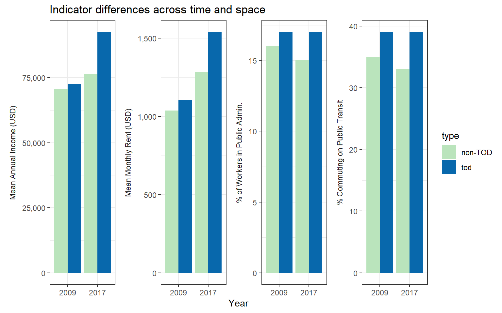
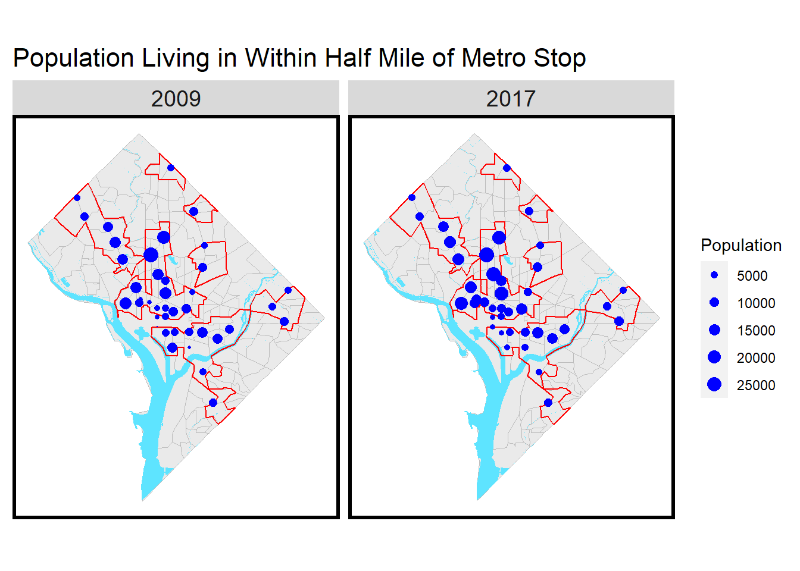
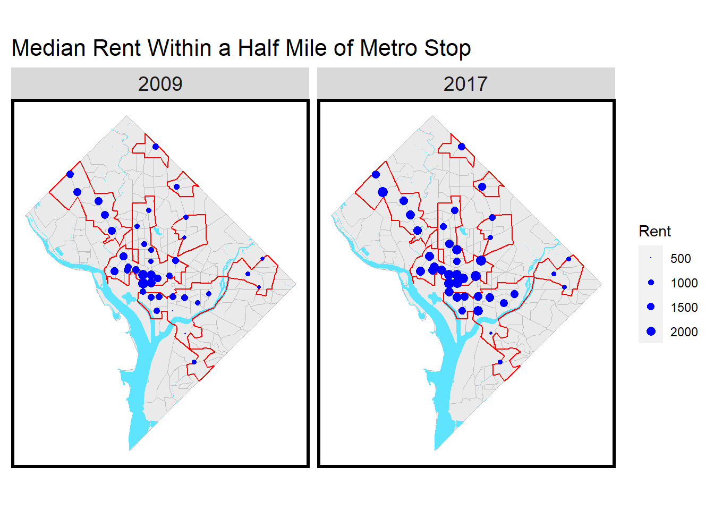
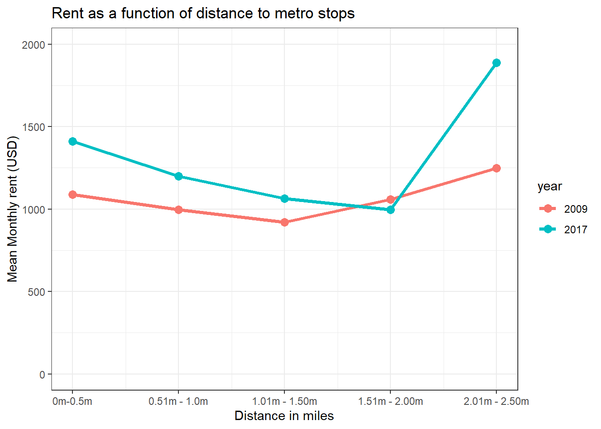

Analysis of Transit Oriented Development Policies in Washington DC
R
Transportation
Census
Author
Richard Barad
Published
October 1, 2023
Introduction
Transited oriented development (TOD) refers to the trend of creating vibrant, livable communities which are compact, walkable, and centered around transit systems. Washington DC has experienced TOD in many sections of the city with new apartment buildings being constructed near metro stops throughout the city. This memo attempts to look at the impacts of TOD development on income and rent. We will also examine if residents living in the TOD are more likely to commute to work on public transit. We look at the spatial patterns of where workers working in public administration tend to live, and examine if they are more likely to live in neighborhoods near the metro. Data on income, rent, and mode of transportation used for commuting is downloaded from the American Community Survey and we compare data from 2009 to data from 2017.
The analysis starts by identifying the TOD area. This analysis defines the TOD area as including all census tracts whose center is located within 1/2 a mile of a metro stop.
This analysis focuses exclusively on metro stops and does not consider bus stops. This is because metro is generally considered faster, more reliable form of public transportation and residents are more likely to be willing to pay more in rent to live near a metro stop. Additionally, transit oriented development in Washington DC has tended occur around metro stops not bus stops.
Get Census Data
I start my analysis by downloading the ACS census data for the variables of interest. I download ACS data for both 2009 and 2017 and merge the datasets together into one table.
Code
# Set ACS Variablesacs_variables2017 <-c('B25119_001', #Median Household Income'B25058_001', #Rent'B08130_001', #Total Working Population'B08130_016', #Total Population Commuting on Public Transit'B08126_014', #Public Administration Workforce'B01001_001') #Total Populationacs_variables2009 <-c('B25119_001', #Median Household Income'B25058_001', #Rent'B08130_001', #Total Working Population'B08130_016', #Total Population Commuting on Public Transit'C24030_028', #Public Administration Workforce Male'C24030_055', #Public Administration Workforce Female'B01001_001') #Total Population#Download 2009 Census Datadc2009tracts <-get_acs('tract',variables = acs_variables2009,year =2009,state ='DC',geometry =TRUE,output ='wide') %>%rename('median_income'='B25119_001E','median_rent'='B25058_001E','working_pop'='B08130_001E','transit_pop'='B08130_016E','male_public_pop'='C24030_028E','female_public_pop'='C24030_055E','total_pop'='B01001_001E') %>%st_transform('EPSG:2248') %>% dplyr::filter('total_pop'!=0) %>%mutate(pct_transit =round((transit_pop / working_pop) *100,2),public_pop = male_public_pop + female_public_pop,pct_public =round((public_pop / working_pop) *100,2),median_income = median_income *1.14,median_rent = median_rent *1.14,year ='2009') %>% dplyr::select(-NAME, -starts_with("B0"), -starts_with("B1"), -starts_with("B2"),-starts_with("C2"), -male_public_pop, -female_public_pop)#Download 2017 Census Datadc2017tracts <-get_acs('tract',variables = acs_variables2017,year =2017,state ='DC',geometry =TRUE,output ='wide') %>%rename('median_income'='B25119_001E','median_rent'='B25058_001E','working_pop'='B08130_001E','transit_pop'='B08130_016E','public_pop'='B08126_014E','total_pop'='B01001_001E',) %>%st_transform('EPSG:2248') %>% dplyr::filter('total_pop'!=0) %>%mutate(pct_transit =round((transit_pop / working_pop) *100,2),pct_public =round((public_pop / working_pop) *100,2),year ='2017') %>% dplyr::select(-NAME, -starts_with("B0"), -starts_with("B1"), -starts_with("B2"))#Bind all data togetherall_census_data =rbind(dc2017tracts,dc2009tracts)
Procees DC Metro Data
Next I download the metro station data from the Washington DC open data portal. I remove all metro stops which are not located within the Washington DC district boundaries.
Code
dc_boundary <-st_union(dc2017tracts) #Create union of all census tracts in DCdcmetro <-st_read('https://maps2.dcgis.dc.gov/dcgis/rest/services/DCGIS_DATA/Transportation_Rail_Bus_WebMercator/MapServer/51/query?outFields=*&where=1%3D1&f=geojson') %>%st_transform('EPSG:2248') #Download DC Metro points and set projectiondcmetro <- dcmetro[st_intersects(dcmetro, dc_boundary) %>% lengths >0, ] #Intersect DC metro points with DC boundary
Buffer Metro Points
I create a one mile buffer around the dc metro points.
Get the centroids of the census tracts and identify TOD and Non-TOD
I get the centroid of the census tracts and determine which census tract centroids are located within the TOD area. Census tracts which have a centroid within the TOD area are considered to be part of the TOD area.
The map below shows the census tracts included in the TOD area. All census tracts which are not part of the TOD area are shown in green - these census tracts will be refereed to as the non-TOD area.
Code
ggplot()+geom_sf(data = all_census_data, aes(fill = type))+geom_sf(data = dcwater,fill='#5ee4ff',color=NA)+geom_sf(data = dcmetro,size=1.3)+ggtitle("Map of TOD and Non-TOD Areas")+scale_fill_manual(values =c('#9effa9','red'),labels =c('Non-TOD','TOD'))+facet_wrap(~year)+mapTheme()

Mean Annual Income in the TOD
The maps below show the mean annual income by census tract in 2009 and 2019 - the TOD area is indicated by the red outline and metro stops are shown as black dots. The 2009 data is adjusted for inflation, and income data is presented using the value of the dollar in 2017. Income in Washington DC is generally highest in the Northwestern areas of Washington DC, while census tracts West of the Anacostia river have the lowest annual income. Annual income has increased in several census tracts located within the TOD. Metro stops where there is a notable increase in income in the census tracts surrounding the metro stop are visualized in the map as larger dots. Areas of the TOD where we observe a large increase in income levels from 2009 to 2017 include census tracts near the Columbia Heights and Petworth metro stops on the green metro line, and tracts located near the Brookland and NOMA metro stops on the red line.
The maps below show the median monthly rent by census tract in 2009 and 2017. As in the previous map, the TOD area is shown by a red outline and metro stops are shown as black dots. Rent has increased sharply in many neighborhoods in Washington DC from 2009 to 2017. The 2009 map has been adjusted for inflation, and all data is represented using the value of a dollar in 2017. Rent has increased from 2009 to 2017 in several areas of Washington DC - some of the largest increases in rent have occurred in neighborhoods located in the TOD area. Notably, the census tracts located near the Columbia Heights, Petworth, Brookland, Fort Totten, and Takoma metro stops have all experienced increases in rent - in these neighborhoods residents appear to be willing to pay more in rent to live near the metro. However, the pattern of rising rents in the TOD area is not present in all parts of the city, residents living east of the Anacostia river continue to have some of the lowest rents in Washington DC. The cost of rent east of the Anacostia is similar in the TOD and non-TOD areas.
These maps show the percent of workers using any form of public transit to commute to work in 2009 and 2017. As in the previous maps, TOD area is shown by the red line and metro stops are presented as block dots. The percentage of workers commuting to work on public transit is higher in the TOD area. The may be partially attributed to the faster speed and greater reliability of metro compared to the bus. Residents who have the ability to live in desirable areas with high rent and want to commute by public transit appear to be choosing to live near metro stops. For instance, areas with high rents along the green line and both branches of the red line also have a high percentage of residents commuting to work on public transit.
Metro stops in the downtown corridor do not have a high percentage of the population living near the metro stops commuting to work on public transit. This may be because residents who live downtown are likely to also work downtown and live close enough to their workplace to walk to work. However, additional analysis is needed to confirm this hypothesis. In areas with high income which are also located outside of the TOD-area residents are not likely to commute to work on public transit.
Public sector jobs represent a large employment sector in the DMV area, accounting for 15 percent of jobs. Public administration works tend to have higher incomes than workers in the service industry, but lower incomes than employees working in office jobs in the private sector. Federal employees also receive a commuter benefit which can offset the cost of commuting to work on public transit. Looking at where public administrative workers are living can help us determine if federal workers are using this benefit.
Federal workers appear to be choosing to live within the TOD area in close proximity to metro - federal commuter benefits may be contributing to this choice. Additionally, the percentage of federal workers living in the downtown corridor has declined from 2009 to 2017. As shown in previous maps, the downtown corridor has some of the highest rents in the city and public administration workers may be getting priced out of these areas as rent continues to increase. Conversely, the percentage of federal workers living near the Brookland, NOMA, and Fort Totten metro stops has increased in 2017 compared to 2009. As shown in the income and rent maps, these neighborhoods have experienced increases in rent and average income level, but rent remains lower than the most expensive parts of the city. These recently developed areas are suitable for public administration workers because the neighborhoods are desirable and provide easy access to public transit while still being affordable to middle income residents such as public administration workers.
This section presents data on our four indicators of interest summarized across time and space for tod and non-tod areas.
Charts
The charts below show the annual income, monthly rent, percent of workers commuting to work on public transit, and the percent of workers working public administration. For all indicators, the charts display the average value for census tracts in the TOD and the average value for census tracts in the Non-TOD areas in 2009 and 2017. Notably, the mean rent in TOD and non-TOD areas was similar in 2009. By 2017, the difference in rent between TOD and non-TOD had increased dramatically. The same patterns have also occurred when looking at annual income, with the gap in income between TOD and non-TOD areas increasing between 2009 and 2017.
Code
census_data_summary <-st_drop_geometry(all_census_data) %>%group_by(year, type) %>%summarize(median_income =round(mean(median_income, na.rm = T),2),median_rent =round(mean(median_rent, na.rm = T),2),percent_transit =round(mean(pct_transit, na.rm = T),0),percent_public =round(mean(pct_public, na.rm = T),0))census_data_summary %>%gather(Variable, Value, -year, -type) %>%ggplot(aes(year, Value, fill = type)) +geom_bar(stat ="identity", position ="dodge") +facet_wrap(~Variable, scales ="free_y", ncol=4, strip.position ='left',labeller =as_labeller(c(median_income ='Mean Annual Income (USD)',median_rent ='Mean Monthly Rent (USD)',percent_transit='% Commuting on Public Transit',percent_public='% of Workers in Public Admin.'))) +scale_fill_manual(values =c("#bae4bc", "#0868ac")) +labs(title ="Indicator differences across time and space") +theme_bw()+ylab(NULL) +xlab('Year')+scale_y_continuous(labels =function(x) format(x, big.mark =",",scientific =FALSE))+theme(strip.background =element_blank(),strip.placement ="outside")

Table
Both rent and income have increased sharply in TOD areas from 2009 and 2017. As shown in the table below the difference in mean income between TOD and non-TOD areas was only 1,548 USD in 2009 - by 2017 the difference had increased to 16,085 USD, indicating an increase of over 900%. Similar trends are present for rent where the difference in monthly rent between TOD and non-TOD areas in 2009 was only 58 USD. By 2017 the difference had increased to 252 USD, an increase of 334%.
Code
census_data_summary %>%kable(booktabs =TRUE,col.name =c('Year','Type','Mean Income (USD)','Mean Rent (USD)','Mean % Commuting on Transit','Mean % Public Workers'), align='c') %>%kable_styling()
Year
Type
Mean Income (USD)
Mean Rent (USD)
Mean % Commuting on Transit
Mean % Public Workers
2009
non-TOD
70678.70
1037.85
35
16
2009
tod
72443.08
1103.85
39
17
2017
non-TOD
76393.21
1285.75
33
15
2017
tod
92478.31
1537.99
39
17
Analysis
Code
#Spatially join centroid of census tracts to buffers around metro stops and sum total population within 1/2 milf of buffermetro_pop <-st_join(metro_buffer,centroids %>% dplyr::select(GEOID,year,total_pop,median_rent)) %>%group_by(NAME,year) %>%summarize(Population =sum(total_pop),Rent=mean(median_rent, na.rm=TRUE)) %>%st_drop_geometry() dcmetro <-inner_join(dcmetro,metro_pop,by='NAME')
Population Map
The map below shows the population living in the TOD area surrounding each metro stop - a larger bubble indicates a larger population living in the census tracts which form the TOD area surrounding the metro stop. The population living near metro stops is high in the urban downtown core of the city where large apartment buildings that house more people tend to dominate the housing landscape. In areas on the periphery of the city single family homes tend to be the main form of housing - as a result fewer residents live within the TOD at the edges of the city.
The areas surrounding metro stops have experienced population growth in many parts of Washington DC. This growth is most notable around the U street, Shaw, and Columbia Heights metro stops on the green line and is likely a result of new apartment buildings being developed around metro stops as part of a TOD development strategy.
Code
ggplot()+geom_sf(data = all_census_data,linewidth=0.3,color='#bcbcbc',fill='#eaeaea')+geom_sf(data = dcwater,fill='#5ee4ff',color=NA)+geom_sf(data = tod_dissolve,fill='transparent',color='red',linewidth=0.5)+geom_sf(data = dcmetro, color='blue', aes(size=Population))+ggtitle("Population Living in Within Half Mile of Metro Stop")+scale_size(range =c(0.1, 4))+scale_fill_manual(name='Population')+mapTheme()+facet_wrap(~year)

Rent Map
The increase in population around the Columbia Heights, Petworth, U Street, and Shaw metro stops has been accompanied by a dramatic increase in rent. Rent in the census tract around the Shaw metro stop doubled from 2009 to 2017. Similar trends are present in the TOD surrounding other metro stop such as Brookland, Fort Totten, and Petworth which experienced rent increases of 41%, 81% and 58%. Rent in TOD areas East Of Anacostia river have also increases, but by much smaller percentages. Rent in census tracts bordering the Congress Heights metro stop increased by just 7% while rent in census tracts around the Anacostia metro stop increased by 20%.
Code
ggplot()+geom_sf(data = all_census_data,linewidth=0.3,color='#bcbcbc',fill='#eaeaea')+geom_sf(data = dcwater,fill='#5ee4ff',color=NA)+geom_sf(data = tod_dissolve,fill='transparent',color='red',linewidth=0.5)+geom_sf(data = dcmetro, color='blue', aes(size=Rent))+ggtitle("Median Rent Within a Half Mile of Metro Stop")+scale_size(range =c(0.01, 3))+mapTheme()+facet_wrap(~year)

Multi Ring Buffer Analysis
This chart below shows the mean monthly rent by census tract based on the tracts distance to the nearest metro stop. Looking at the pattern of 2017 line we can observe that census tracts located closer to the metro have a higher mean rent. The point which breaks this pattern is the data point for census tracts located 2.01 - 2.50miles from the metro - this is because this group of tracts includes several census tracts in Northwest DC which have very high rent levels, these high rents pre-date the construction of metro. If we compare the 2009 line to the 2017 line we can again observe a widening of the difference in rent between between areas near the metro and those far away from metro.
Code
allTracts_17 <- all_census_data %>%filter(year ==2017)allTracts_09 <- all_census_data %>%filter(year ==2009)MRB <-multipleRingBuffer(st_union(dcmetro), 2640*10, 2640)rings_17 <-st_join(st_centroid(allTracts_17), MRB, join = st_intersects) %>%st_drop_geometry() %>%select('GEOID','distance') %>%left_join(allTracts_17, by ="GEOID") %>%mutate(distance_miles = distance /5280) %>%st_sf()rings_09 <-st_join(st_centroid(allTracts_09), MRB, join = st_intersects) %>%st_drop_geometry() %>%select('GEOID','distance') %>%left_join(allTracts_09, by ="GEOID") %>%mutate(distance_miles = distance /5280) %>%st_sf()rings <-rbind(rings_17, rings_09) rings <- dplyr::filter(rings, distance_miles !=3.5)ggplot() +#add line tod vs non tod and how many houses there are tod vs non todgeom_line(data = rings, aes(x = distance_miles, y = median_rent, color = year), stat ="summary", fun = mean,linewidth=1.3)+geom_point(data = rings, aes(x= distance_miles, y= median_rent, color= year), stat ="summary", fun = mean, size=3)+ylim(0,2000)+xlim(0.5,2.5)+ggtitle('Rent as a function of distance to metro stops')+scale_x_continuous(breaks =c(0.5,1,1.5,2,2.5),labels =paste0(c("0m-0.5m", "0.51m - 1.0m", "1.01m - 1.50m", "1.51m - 2.00m", "2.01m - 2.50m")))+xlab('Distance in miles')+ylab('Mean Monthly rent (USD)')+theme_bw()

Conclusion
The analysis above highlights the impact that Transit Oriented Development strategies have had on the Washington DC landscape. From 2009 to 2017, there has been a rapid increase in the construction of new apartment buildings around many metro stops in Washington DC. This pattern of new construction near metro stops has been most prominent around the Petworth, Shaw, Columbia Heights, Brookland, and U-Street metro stops. This new construction has occurred alongside rapidly rising rents and an increase in the mean income levels of residents living in the TOD area. Areas in the TOD provide easy access to downtown offices and residents living in the TOD area are more likely to commute to work on public transit. Neighborhoods located in the TOD are popular with middle class residents such as public administration workers and provide residents with housing that is cheaper relative to prices in downtown Washington DC which has some of the highest rent levels in the city.
A notable exception to the trend is of rising rent prices in the TOD is in the section of the TOD area which is located east of the Anacasotia. In this portion of the TOD-area census tracts have experienced minimal changes in rent from 2009 to 2017 despite large increases in other sections of the TOD. The neighborhoods east of the Anacostia are dominated by African american residents and the annual income in census tracts east of the Anacostia are the lowest in the city. Prior to 2017, the development of new apartments around metro stops has taken place mostly west of the Anacostia river. However, there are currently several new projects planned east of the Anacostia, including a 134 unit apartment complex at 1234 Good Hope Road which is located near the Ancostia metro. As new construction expands across the river, it will be important for developers and city counsel to try to keep rent prices similar to current level. If rent east of the Anacostia increases rapidly like it did in other areas of the TOD area there is a high risk of long term residents getting displaced.